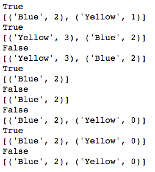

משום מה הצלחתי ליישם את התרגיל ככה שבחצי מהבדיקות אני מקבל true.
בחצי השני, רק בדיקות שמערבות את הפונקציה get_votes, אני ממשיך לקבל false.
כבר ניסיתי המון דברים, אבל לצערי אני נשאר במקום.
אני חושב שמשום מה הפונקצייה מחזירה את רשימת הטאפלים בתור ערך ריק, אבל לא מצליח לסדר את זה. אני כן חושב שסהכ אני מצליח לרשום את הרשימה הזו בצורה שצריך, אבל משהו לא מסתדר לי.
אשמח אם מישהו יודע על מה אני מדבר ויוכל לעזור באיזה הסבר או טיפ.
תודה!
נ.ב.
אם עדיין הסגל בודק לי את התרגילים זה אומר שאני עוד על תקן זכאי לקבלת תעודה נכון?
orpazf
א. נסה להדפיס בכל שלב את הקולות שלך ולראות אם הם נכונים. אם כן, חפש מה הבעיה בפונקציה.
ב. לא, הסגל בודק תרגילים לכל מי שמגיש אותם בזמן.
2 לייקים
orirenick
יש לי ניחוש שאתה לא מוחק ממש את האופציה. ואתה מחזיר שיש להם נגיד 0 הצבעות אחרי שמבצעים remove_option
כפועל יוצא, הגיוני שנגיד בדיקה מי המנצח יוצא נכון, אבל מה ההצבעות שיש ממש אתה נופל בהם
devorack
מסכימה עם אורפז, וממליצה על הדפסות בכלל - תסתכל מה הבדיקה מבקשת, ותנסה להדפיס את מה שקרה לפני / אחרי כדי לבדוק אם עונה לציפיות
tommys8192
תודה על העזרה חברה, בינתיים אני עדיין מסתבך.
אני מגדיר את רשימת הטאפלים בinit אבל משום מה כל פעם שאני מדפיס, זה יוצא none.
לפני זה הדפסתי כל פעם את המילון שאיתו אני גם עובד, והוא הודפס לי בכל שלב כך שהוא מייצג את מה שצריך לקרות.
orpazf
אם זה בכל פעם שאתה מדפיס את הרשימה כולל מיד לאחר ההגדרה - כנראה משהו בהגדרה לא נכון. אם אז זה כן עובד ואחרת לא - כנראה אחת הפונקציות שלך דורסת או עושה שמות.
סציפית בהינתן רשימה אני אנחש שבאיזשהו שלב אתה מנסה לשמור לשדה הזה את התוצאה של append או extend או משהו בסגנון, והתוצאה הזו היא None
tommys8192
אוקיי, עליתי על משהו בזכותכם. משום מה בפונקציה vote שהגדרתי, אני מציב תנאי לאם קיים הvote הספיציפי במילון, ואם כן אז שיוסיף 1 לערך הקיים. משום מה זה לא עובד. אני מנסה לשחק עם זה ולעשות עוד דברים אבל בינתיים לא מצליח לגרום לזה לעבוד
tommys8192

tommys8192
זה מה שאני מקבל כשאני מריץ את זה. לא מבין למה אני מקבל false.
מתחת לget_votes אני פשוט מגדיר לו return לרשימה הזו שיש לי שאפשר לראות בפלט (שלפי הפלט מתאימה גם לקריטריונים). יש למישהו פה איזה רעיון למה זה בכל זאת מדפיס false?
תודה
devorack
מה כתוב בשורה שבפועל מדפיסה לך False ?
tommys8192
return list
כשlist זו הרשימה שאפשר לראות בהדפסה ששיתפתי מקודם (שאכן שווה לרשימה הנבדקת מבחינת סדר וערכים)
orpazf
האם ייתכן שאתה מחזיר משהו שאינו רשימה של טאפלים? האם ייתכן שאתה מדפיס ולא מחזיר?
tommys8192
לא, אני בודאות מחזיר את הרשימה ולא הדפסה…
orpazf
אין לי עוד רעיונות מבלי להסתכל על הקוד, יכולה להסתכל על המתודה הזו (+init כדי לדעת מה קורה שם) בפרטי אם תרצה